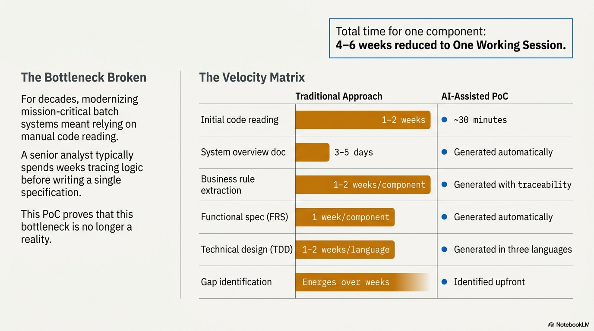

In a single working session, an AI assistant can reverse-engineer thousands of lines of JCL and COBOL to produce a complete, auditable specification library that traditionally requires 4–6 weeks of senior analyst effort.

Proof of Concept Results
During the PoC, the AI was tasked with analysing a complex legacy data load system comprising:
- 1,635 lines of JCL (35 steps with conditional execution logic)
- 7 COBOL programs totalling over 8,000 lines of code
- 15 IMS copybooks and 9 DFSORT control members
The technical complexity of hospital system services and data loads is no longer a barrier to velocity. We can now decompress the logic of an entire system in hours rather than months.
Speed Comparison
| Activity | Traditional Analyst Effort | AI-Assisted |
|---|---|---|
| Initial Code Reading & Comprehension | 1–2 Weeks | ~30 Minutes |
| System Overview Documentation | 3–5 Days | Automated Generation |
| Business Rule Extraction (BRS) | 1–2 Weeks per component | Automated with Traceability |
| Functional Specification (FRS) | 1 Week per component | Automated Generation |
| Technical Design (TDD) | 1–2 Weeks per language | Generated in 3 languages |
| Gap Identification | Weeks (during implementation) | Identified Upfront |
| Total for One Component | 4–6 Weeks | One Working Session |
Proactive Risk Reduction
The AI reduces risk by proactively identifying missing artefacts. In the PoC, the AI identified a missing transformation program before analysis even began, preventing the costly mid-project stalls typical of manual discovery.
The bottom line: The question is no longer "can we reverse-engineer legacy COBOL?" — it's "how fast do we want to move?"